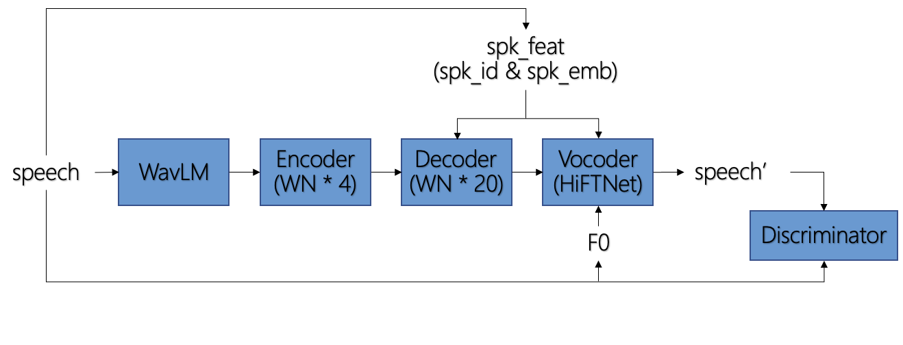
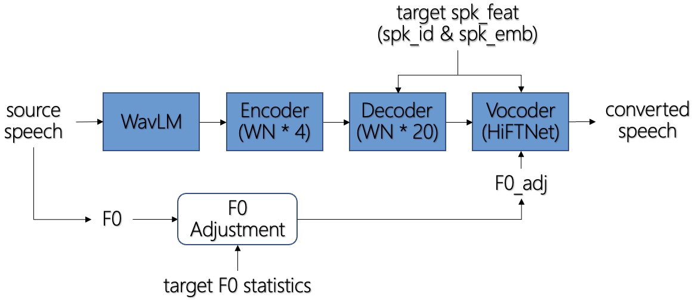
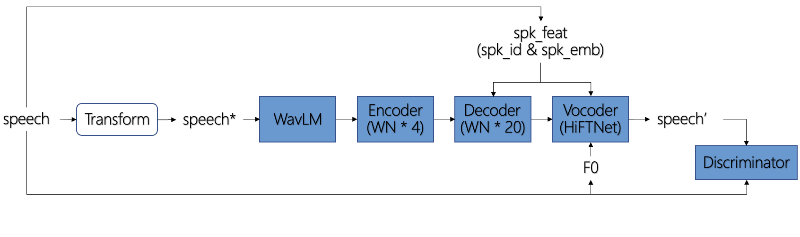
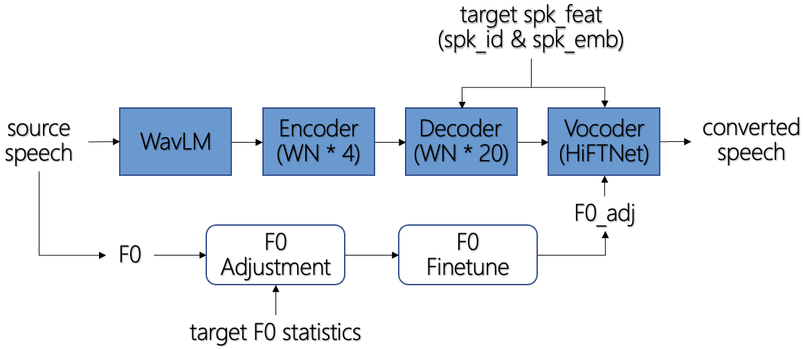

|  |  |
| (a) Training | (b) Inference |
|---|---|
|  |  |
| (c) Training (w/ optional properties) | (d) Inference (w/ optional properties) |
Source wavs are from LibriTTS test-clean subset.
| Source | Target | Conversion | |
|---|---|---|---|
| F_1580_141084_000089_000000 | F_p261_023 | PitchVC | SOVITS KNN-VC |
| M_8230_279154_000024_000007 | F_p261_023 | PitchVC | SOVITS KNN-VC |
| F_8555_292519_000012_000000 | F_p308_328 | PitchVC | SOVITS KNN-VC |
| M_260_123440_000026_000000 | F_p308_328 | PitchVC | SOVITS KNN-VC |
| F_4970_29095_000040_000001 | F_p317_021 | PitchVC | SOVITS KNN-VC |
| M_5105_28240_000031_000000 | F_p317_021 | PitchVC | SOVITS KNN-VC |
| F_3729_6852_000078_000003 | M_p237_023 | PitchVC | SOVITS KNN-VC |
| M_7021_85628_000017_000000 | M_p237_023 | PitchVC | SOVITS KNN-VC |
| F_8555_284447_000053_000003 | M_p256_079 | PitchVC | SOVITS KNN-VC |
| M_1320_122617_000043_000001 | M_p256_079 | PitchVC | SOVITS KNN-VC |
| F_1580_141083_000110_000001 | M_p347_011 | PitchVC | SOVITS KNN-VC |
| M_7176_92135_000074_000001 | M_p347_011 | PitchVC | SOVITS KNN-VC |
Source wavs are from ESD dataset, language: English; emotion: happy, angry, sad, surprise (neutral excluded).
| Source | Target | Conversion | |
|---|---|---|---|
| F_0015_000750 | F_p261_023 | PitchVC | SOVITS KNN-VC |
| M_0012_000478 | F_p261_023 | PitchVC | SOVITS KNN-VC |
| F_0017_000862 | F_p308_328 | PitchVC | SOVITS KNN-VC |
| M_0014_000935 | F_p308_328 | PitchVC | SOVITS KNN-VC |
| F_0019_001520 | F_p317_021 | PitchVC | SOVITS KNN-VC |
| M_0014_001172 | F_p317_021 | PitchVC | SOVITS KNN-VC |
| F_0018_001244 | M_p237_023 | PitchVC | SOVITS KNN-VC |
| M_0012_000898 | M_p237_023 | PitchVC | SOVITS KNN-VC |
| F_0018_000525 | M_p256_079 | PitchVC | SOVITS KNN-VC |
| M_0011_001627 | M_p256_079 | PitchVC | SOVITS KNN-VC |
| F_0015_001218 | M_p347_011 | PitchVC | SOVITS KNN-VC |
| M_0014_000479 | M_p347_011 | PitchVC | SOVITS KNN-VC |
Source wavs are from ESD dataset, language: Chinese; emotion: neutral.
| Source | Target | Conversion | |
|---|---|---|---|
| F_0007_000020 | F_p261_023 | PitchVC | SOVITS KNN-VC |
| M_0004_000155 | F_p261_023 | PitchVC | SOVITS KNN-VC |
| F_0001_000185 | F_p308_328 | PitchVC | SOVITS KNN-VC |
| M_0008_000213 | F_p308_328 | PitchVC | SOVITS KNN-VC |
| F_0002_000100 | F_p317_021 | PitchVC | SOVITS KNN-VC |
| M_0010_000055 | F_p317_021 | PitchVC | SOVITS KNN-VC |
| F_0002_000042 | M_p237_023 | PitchVC | SOVITS KNN-VC |
| M_0010_000314 | M_p237_023 | PitchVC | SOVITS KNN-VC |
| F_0009_000161 | M_p256_079 | PitchVC | SOVITS KNN-VC |
| M_0005_000071 | M_p256_079 | PitchVC | SOVITS KNN-VC |
| F_0001_000111 | M_p347_011 | PitchVC | SOVITS KNN-VC |
| M_0010_000212 | M_p347_011 | PitchVC | SOVITS KNN-VC |